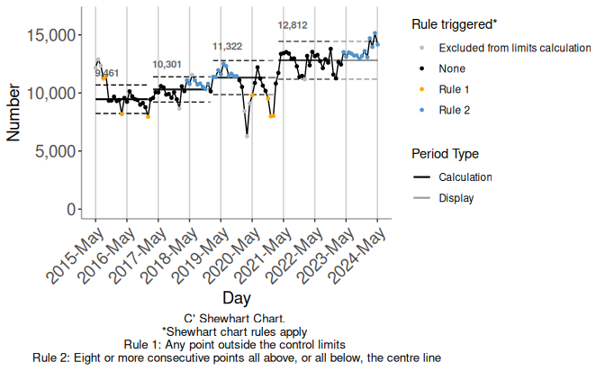

The Stable Shift Algorithm
stable-shift-algorithm.Rmd
library(autospc)
library(dplyr)
#>
#> Attaching package: 'dplyr'
#> The following objects are masked from 'package:stats':
#>
#> filter, lag
#> The following objects are masked from 'package:base':
#>
#> intersect, setdiff, setequal, union
library(scales)
library(DiagrammeR)1 Introduction
The autospc package implements the Stable Shift Algorithm for
re-establishing control limits in statistical process control (SPC) analysis.
This vignette describes the problem the algorithm addresses, sets out some
useful terminology, describes the algorithm, and explains how to use the
algorithm log.
2 The problem
A standard approach in SPC analysis for quality improvement goes as follows:
- Establish a baseline:
- gather or extract data over a period of time prior to a planned improvement initiative
- plot this data on a control chart, forming baseline control limits
- Extend the baseline limits into the future
- Add data to the chart as time progresses, without updating the control limits
An example is shown in Figure 2.1. This uses the
ed_attendances_monthly dataset included with autospc. For more information
on this dataset see ?ed_attendances_monthly.
facet_stages(
ed_attendances_monthly %>%
filter(row_number() <= 32L),
split_rows = c("Baseline" = 24L,
"Data added beyond baseline" = 28L,
"Further data added" = 32L),
x = Month_Start,
y = Att_All,
chartType = "C'",
periodMin = 24,
use_caption = FALSE,
x_break = 91.25,
x_date_format = "%Y-%b",
extend_limits_to = as.Date("2018-04-01"),
upper_annotation_sf = 0.825
)
#> Registered S3 methods overwritten by 'ggpp':
#> method from
#> heightDetails.titleGrob ggplot2
#> widthDetails.titleGrob ggplot2Figure 2.1: Extending baseline control limits
As data is added, the process may shift to a higher or lower level. Indeed, this
is often the aim of an improvement initiative. This prompts the question of
whether and when the control limits should be re-established to better represent
the new process. Whilst various textbooks and online resources offer opinions on
this issue, there is no universally accepted approach. The Stable Shift
Algorithm (SSA) offers an automated, consistent and rigorous approach to
re-establishing control limits.
3 The Stable Shift Algorithm
3.1 Overview
The main idea of the SSA is to only re-establish limits where:
A. There is evidence that the process has shifted to a new level
B. This shift persists for long enough to compute new control limits
In other words, the SSA re-establishes limits at shift rule breaks, provided that the shift is not “transient” in some sense. Here “transient” means that once we calculate the new control limits, there is not a shift rule break back towards the original process. In the next two sections we make this idea precise and describe how it is operationalised in the SSA.
3.2 Some terminology
First, it is useful to introduce some terminology. We will refer to Figure
3.1 to illustrate the concepts introduced in this section. This
figure shows a C-chart for the first 35 data points of the simulated
example_series_2a data included with autospc, which for the purpose of this
section we shall interpret as daily values of a count measure of interest.
plot_auto_SPC(example_series_2a %>%
filter(row_number() <= 35L),
override_y_title = "Count",
chartType = "C",
extend_limits_to = 47L)Figure 3.1: Example 1
3.2.1 Calculation and display periods
The data used to calculate a set of control limits comes from a contiguous period of time, with the possible exception of some excluded points. This period of time is referred to as the calculation period of the limits.
When the limits are extended into the future, beyond their calculation period, the period over which they are extended is referred to as the display period.
In charts produced by autospc, limits are displayed as black dashed lines over their calculation period, and grey dashed lines over their display period. For example, in 3.1, there is one calculation period, covering days 1 to 21 inclusive, extended into its display period covering day 22 onwards.
3.2.2 Rule-breaking run
A rule-breaking run is a run whose length is greater than or equal to the
threshold for a shift rule break (runRuleLength), set to \(8\) by default in
plot_auto_SPC(). In 3.1, there is a rule-breaking run of
length 10 starting on day 22. By default, rule-breaking runs are highlighted in
blue by autospc.
Runs that are subsets of longer runs with the same end point count here, so for
example with the default runRuleLength = 8, the run of length 10 in
3.1 actually comprises three rule-breaking runs, commencing at
the first, second and third points in the length 10 run. In this example, the
first rule-breaking run starts on day 22 and has length 10, the second starts on
day 23 and has length 9, and the third starts on day 24 and has length 8. The
run that commences on day 25, the fourth point of the length 10 run, is not
rule-breaking, since it is of length 7 only.
3.2.3 Triggering rule break
In the SSA, a rule-breaking run commencing during a display period triggers consideration of whether to re-establish limits. Such a run is referred to as a triggering rule break.
In 3.1 the highlighted rule-breaking run is a triggering rule break.
3.2.4 Candidate limits
In order to decide whether to re-establish control limits at a triggering rule
break, the SSA requires consideration of the set of limits that would be
established. These are referred to as candidate limits until they are either
rejected or accepted. Candidate limits are formed from the first periodMin
points starting at the first point of the triggering rule break, and this
period is referred to as the candidate calculation period.
In Figure 3.1, there are fewer than periodMin (here 21)
points on or after the start of the triggering rule break (day 22), so it is not
possible to re-establish limits at day 22, and there are no candidate limits to
consider.
In Figure 3.2 we imagine rolling time forward, so that we have more data to add to the chart in 3.1. Figure 3.2 shows the data against the (baseline) calculation limits. Figure 3.3 shows candidate limits established at the start of the triggering rule break, i.e. day 22.
plot_auto_SPC(example_series_2a,
override_y_title = "Count",
chartType = "C",
noRecals = TRUE,
extend_limits_to = 47L)Figure 3.2: Example 2
plot_auto_SPC(example_series_2a,
override_y_title = "Count",
chartType = "C",
extend_limits_to = 47L)Figure 3.3: Example 3
3.2.5 Opposing rule break
If there is a rule break within the candidate calculation period, and that rule break is in the opposite direction to the triggering rule break, it is referred to as an opposing rule break. We also sometimes refer to such a rule break as a reversion, as in reverting to the original limits.
In Figure 3.3 there is no opposing rule break within the candidate calculation period. Figure 3.4 shows an alternative continuation of the baseline time series we have considered so far. This series is identical to the first up to day 26, and differs thereafter. There is still a triggering rule break against the baseline limits commencing at day 22. Figure 3.5 shows candidate limits established from the start of this triggering rule break, i.e. from day 22. There is an opposing rule break in Figure 3.5, commencing on day 31.
plot_auto_SPC(example_series_2b,
override_y_title = "Count",
chartType = "C",
noRecals = TRUE,
extend_limits_to = 47L)Figure 3.4: Example 4
plot_auto_SPC(example_series_2b,
override_y_title = "Count",
chartType = "C",
recalEveryShift = TRUE,
extend_limits_to = 47L)Figure 3.5: Example 5
If an opposing rule break only reaches the runRuleLength threshold after the
end of the candidate calculation period, it is referred to as an
overhanging reversion. Figure 3.6 shows another alternative
continuation of our example time series, this time showing an
overhanging reversion commencing on day 40, against the candidate limits.
plot_auto_SPC(example_series_2c,
override_y_title = "Count",
chartType = "C",
recalEveryShift = TRUE)Figure 3.6: Example 6
3.2.6 Minimum period length
The SSA requires specification of a minimum number of data points to be used for calculation of control limits, \(n_{min}\). Whilst those using SPC in practice may not often make such a minimum explicit, in a way it is always there implicitly - nobody would compute control limits from two data points would they? In fact, various authors offer guidance on what such a minimum should be, with values ranging from 17 to 25 points.
In plot_auto_SPC(), \(n_{min}\) is specified by the periodMin argument,
defaulting to 21. This default is above the commonly recommended minimum values
and represents a convenient choice for daily data, since it is a multiple of 7.
This means that in the presence of weekly “seasonal” (periodic) variation over
the 7 day period the limits are not unduly affected by which day of the week the
limit calculation period begins on. When using monthly data, it is preferable to
use \(n_{min} = 24\), for the same reason.
3.3 Details of the algorithm
The steps of the algorithm are as follows:
Algorithm counter initialised to the first data point.
Check there is sufficient data to form at least one set of limits. If a time series has fewer points than \(n_{min}\), then according to the SSA no control limits can be established. If a time series has length \(n\) with \(n_{min}\leq n < 2n_{min}\), then there are sufficient data points to form one period. The SSA establishes limits calculated from the first \(n_{min}\) points, with limits extended over the remainder of the data. However, in this case there are not sufficient data points to re-establish a second set of limits, so the SSA terminates after establishing this first set of limits.
From here on, therefore, we assume that the number of data points in the time series to be analysed is \(n \geq 2n_{min}\). After the first set of limits are established, the counter is set to the first point after the end of this first calculation period.
Main algorithm loop begins
If there are fewer than \(n_{min}\) data points remaining from the counter, then there are insufficient data points to further re-establish limits, and the algorithm terminates.
If there are no further rule-breaking runs, then the algorithm terminates. If there is at least one rule-breaking run, the algorithm sets the counter to the first data point of the first such run, now labelled the triggering run.
Again check there is sufficient data remaining from the counter. If not, terminate. If so, candidate limits are formed from the first \(n_{min}\) data points beginning at the counter.
-
Decide whether to accept or reject the candidate limits:
If there is at least one opposing rule break commencing within the candidate calculation period, then the candidate limits are rejected, the counter is set to the next rule-breaking run (after the triggering rule break) against the prevailing limits, and the algorithm continues from (3).
If the final run of the candidate calculation period could become an opposing rule break with the addition of more data to the time series, then the candidate limits are rejected, the counter is set to the next rule-breaking run (after the triggering rule break) against the prevailing limits, and the algorithm continues from (3).
If neither of the conditions of (i) and (ii) are met, then the candidate limits are accepted, established from the start of the triggering rule break, and extended over the rest of the data. The counter is set to the first point after the end of the new calculation period, and the algorithm continues from (3).
The algorithm is visualised in the flow chart below.
grViz(autospc:::algorithm_flow_chart_string)4 Using the algorithm log
If you would like to view a log of the path through the flow diagram above for a given timeseries, there are two ways you can do this.
4.1 Print log to console
To print a log out to the console, set the verbosity argument of
plot_auto_SPC() to either 1 (for basic log information) or 2 (for full
detail).
plot_auto_SPC(
ed_attendances_monthly,
chartType = "C'",
x = Month_Start,
y = Att_All,
verbosity = 1,
x_break = 365,
x_date_format = "%Y-%b",
point_size = 1L
)
#>
#> C':
#>
#> Counter at 1, 2015-05-31:
#> - Counter initialised to 1.
#> - Sufficient data to form at least one period.
#>
#> Counter at 22, 2017-03-01:
#> - Main algorithm loop commenced.
#> - Sufficient data to proceed. Moving counter to the next shift
#> rule break, commencing at point 23.
#>
#> Counter at 23, 2017-03-31:
#> - There is a shift rule break commencing here, upwards from
#> the current centre line.
#> - Forming candidate limits.
#> - Candidate limits accepted, limits re-established.
#>
#> Counter at 44, 2019-01-01:
#> - Sufficient data to proceed. Moving counter to the next shift
#> rule break, commencing at point 46.
#>
#> Counter at 46, 2019-03-01:
#> - There is a shift rule break commencing here, upwards from
#> the current centre line.
#> - Forming candidate limits.
#> - Candidate limits accepted, limits re-established.
#>
#> Counter at 67, 2020-12-01:
#> - Sufficient data to proceed. Moving counter to the next shift
#> rule break, commencing at point 71.
#>
#> Counter at 71, 2021-03-31:
#> - There is a shift rule break commencing here, upwards from
#> the current centre line.
#> - Forming candidate limits.
#> - Candidate limits accepted, limits re-established.
#>
#> Counter at 92, 2023-01-01:
#> - Insufficient remaining data for further re-establishment of
#> limits.
4.2 Save log to a file
To save the log to a file, provide a file path using the log_file_path
argument of plot_auto_SPC(). If the file path you provide ends ".rds" the
log will be saved to an rds file, if it ends ".csv" the log will be saved to a
csv file.
The data frame that is saved has one row for each log entry, and contains the following columns:
-
counter: the counter value (row number of the dataframe passed to thedfargument ofplot_auto_SPC()) that the log entry refers to -
x: the value of thexcolumn at this counter value (the column passed asxtoplot_auto_SPC()) -
log_entry: the log entry, recorded in shorthand (see below) -
interpretation: text interpretation of the log entry
Note that full log details are saved, regardless of the value of the verbosity
argument.
4.3 Log shorthand
The log is populated as the algorithm executes, using a shorthand notation
described in the following table. This shorthand forms the content of the
log_entry column of the log dataframe exported to log_file_path.
log_exp_tab <- autospc:::log_explanation_table| algorithm_step | shorthand | explanation |
|---|---|---|
| 1 | 0100 | Initialise algorithm. Counter = 1. |
| 2 | 02xx | Check whether there are sufficient data to form at least one set of limits. |
| x = 00: Yes | ||
| x = 10: No | ||
| 3 | 0300 | Main algorithm loop begins. |
| 4 | 04xxyy | Check whether there are sufficient data to proceed (Yes/No), and find subsequent rule breaks. |
| xx = 00: Yes - next rule break within current run | ||
| xx = 01: Yes - next rule break beyond current run | ||
| xx = 10: No | ||
| yy = position of next rule break. | ||
| 5 | 05xxyy | Check whether there are any subsequent rule breaks. |
| xx = 00: Yes | ||
| xx = 10: No | ||
| yy = 01: Next rule break downwards | ||
| yy = 10: Next rule break upwards | ||
| 6 | 06xxyz | Check whether there are sufficient data to proceed. |
| xx = 00: Yes | ||
| xx =10: No | ||
| Examine candidate limits. | ||
| y = 0: No opposing rule break | ||
| y = 1: At least one opposing rule break. | ||
| z = 0: Final run does not prevent re-establishment of limits | ||
| z = 1: Final run prevents re-establishment of limits. | ||
| 7 | 07xx | Decide whether to re-establish limits. xx = 00: Yes, xx = 10: No. |